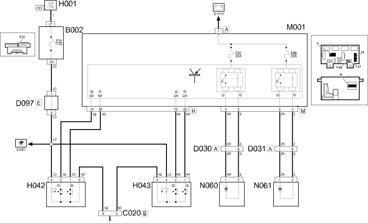

E3050 ELECTRIC FRONT WINDOWS - Wiring diagram
- Path
- Electrical equipment > 1 ELECTRICAL FUNCTIONS > E30 Electrically activated devices > E3050 ELECTRIC FRONT WINDOWS > E3050 ELECTRIC FRONT WINDOWS - Wiring diagram
- Kind
- wiring diagram
- Applies to
- all engines; all production periods
- Interactive page
- https://sloeber94.github.io/elrnDB-fPnd/en/#/2751491
Applies to: all engines; all production periods
Wiring diagram

COMPONENTS
Component code | Name | Assembly reference |
|---|---|---|
Junction unit under dashboard | ||
Passenger side dashboard earth | - | |
Front left door connection | - | |
Front right door connection | - | |
Short circuiting coupling | - | |
Ignition switch | ||
Driver's front electric window switch | ||
Passenger's front electric window switch | ||
Body computer | ||
Front left electric window motor | ||
Front right electric window motor |
Topics linked from this page (15)
- 5505A multi-function components
- 5505C vehicle compartment wiring
- 5520A ignition switch
- 7005M front electric windows
- B002 JUNCTION UNIT UNDER DASHBOARD
- C020 PASSENGER SIDE DASHBOARD EARTH
- D030 DRIVER'S FRONT DOOR COUPLING
- D031 PASSENGER FRONT DOOR COUPLING
- D097 SHORT CIRCUITING COUPLING
- H001 IGNITION SWITCH
- H042 DRIVER'S FRONT ELECTRIC WINDOW SWITCH
- H043 PASSENGER'S FRONT ELECTRIC WINDOW SWITCH
- M001 BODY COMPUTER
- N060 DRIVER'S FRONT DOOR ELECTRIC WINDOW MOTOR
- N061 RIGHT FRONT ELECTRIC WINDOW MOTOR